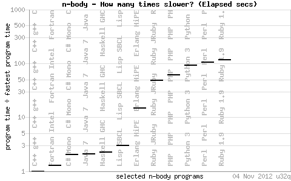
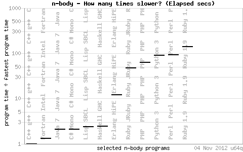
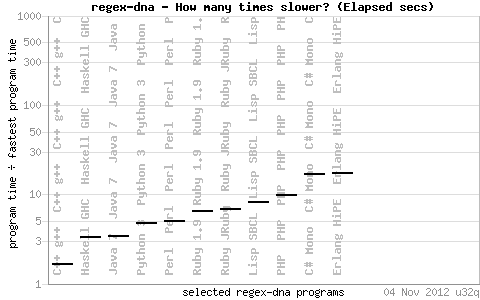
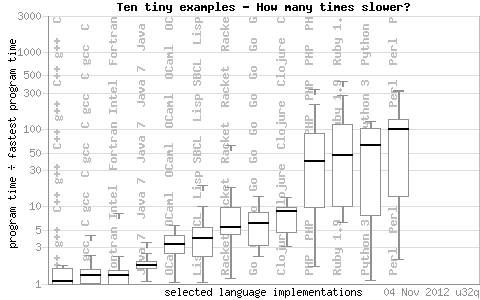

Computer Languages, Intro
Created: 2017-11-14 Tue 09:01
1 Goals
- Understanding :
- the programming languages design space (tradeoffs)
- the programming paradigms
- how the programs are
- interpreted
- compiled
- Being able to :
- choose programming languages
- learn new programming languages
- apply various programming paradigms in various languages when it makes sense
2 Related
- Advanced Algorithms
- distributed : async
- genetic programming homoiconocity
- constraint programming
- ICPOO
3 What is a programming language ?
- What is a language ?
- What is programming ?
4 From CPU to human thought
- What is a CPU (core) ?
- Is it still the relevant computational unit ?
- What is human thought ? -Sapir-Whorf hypothesis
- instructions vs expressions
5 The main trade off
performance vs. expressiveness programmer's time vs. CPU time
5.1 Performance ?
Benchmarks (e.g. http://shootout.alioth.debian.org/ )




5.2 Expressiveness: LOC
OCaml vs. Java
| Benchmark | Time | Memory | Code |
| regex-dna | 1/2 | 2× | 1/2 |
| reverse-complement | ± | 1/4 | 3× |
| fannkuch-redux | ± | 1/24 | 1/3 |
| spectral-norm | ± | 1/9 | 1/3 |
| n-body | 2× | 1/24 | ± |
| pidigits | 2× | 1/9 | 2× |
| binary-trees | 2× | 1/5 | ± |
| fasta | 2× | 1/9 | ± |
| mandelbrot | 3× | 1/17 | ± |
| k-nucleotide | 4× | ± | 1/6 |
5.3 Expressiveness: example
public static boolean isBlank(String JavaDoc str) { int strLen; if (str == null || (strLen = str.length()) == 0) { return true; } for (int i = 0; i < strLen; i++) { if ((Character.isWhitespace(str.charAt(i)) == false)) { return false; } } return true; }
(defn blank? [s] (every? #(Character/isWhitespace %) s))
6 Safety vs power
Programming languages are defined by what that enable and by what they prevent.
Dangerous is often interesting : tradeoffs wrt safety.
7 Abstractions
«Being abstract is something profoundly different from being vague … The purpose of abstraction is not to be vague, but to create a new semantic level in which one can be absolutely precise.» Edsger W. Dijkstra
7.1 Abstraction power and cost: example
Multicore programming:
- Automatic parallelisation
- Manual parallelisation wrt number of threads
- Manual threads pinning on core wrt cache sharing
Cf. also automatic (or not) vectorisation with SIMD instructions.
7.2 Abstraction can (also) bring more efficient programs
Give more leeway to the compiler / interpreter to optimize.
7.3 Restrictions can bring more efficient programs
The less one can do, the easier for the compiler to optimize.
Pointers (references) aliasing.
8 Domain Specific Languages
- external (lex & yacc)
- internal
9 Scripting languages
shells are domain specific languages:
- files
- (streams of) line-oriented text processing
10 The power of a DSL: shell example
The McIlroy vs. Knuth legend:
Read a file of text, determine the n most frequently used words, and print out a sorted list of those words along with their frequencies.
Live Coding !
11 The power of a DSL: shell example
The McIlroy vs. Knuth legend:
Read a file of text, determine the n most frequently used words, and print out a sorted list of those words along with their frequencies.
11.1 Knuth BMCOL
D. Knuth
… 10+ pages of (great) Pascal …
11.2 McIlroy BMCOL
McIlroy
tr -cs A-Za-z '\n' | tr A-Z a-z | sort | uniq -c | sort -rn | sed ${1}q
12 Design Patterns, Programming Paradigms
- The curse of complexity, the quest for abstraction
- variables : type !
- funtions / subroutines : stack, scopes, argument passing
13 Function / subroutines
- coroutines
- concatenative (stack based) languages
14 static / stack / Dynamic allocation
- garbage collector
15 Mutable / Immutable
15.1 Mutability
(mutable) Object : State = Value + Time
- Hidden dependencies (side effects)
- Concurrency issues
15.2 Languages without mutability ?
Value Oriented Programming (functional programming). Applying functions as in mathematics.
- Imperative programming
- kingdom of Nouns
- Functional programming
- kingdom of Verbs
Iterations → Recursion.
Side effects needed for any useful program !
16 static / dynamic Typing
- Dynamic typing:
- (un)boxing of primitive type
- great reusability
- Static typing:
- whole program optimization
- static polymorphism
- compilation errors (good1 !)
- static properties (not only types)
17 Interpreter / compiler
- JIT
18 Syntax
18.1 Syntax ?
- C
- C, C++, Java,…
- LISP
- cf. Abstract Syntax Tree : homoiconicity
- a function call is a list
- a function definition is a list

- others
- Ruby, PERL, Python, Withespace,…
18.2 Syntax: fixed vs. customizable
(real) macros ?
- Homoiconicity → macros (Read, Eval, Print Loop)
19 Functional programming
20 Object Oriented programming
- (single) dynamic dispatching : Abstract Data Types (→ code reuse)
- encapsulation
- data hiding
21 Error Code / Exceptions
Stopping execution as soon as it stops making sense and going back (up the call stack) to where the error can be handled.
22 Single thread / Concurrency memory model
- Atomicity
- Locks
- Thread Local storage
- Immutability
23 Callbacks
- Communicating Sequential Processes
https://swannodette.github.io/2013/07/12/communicating-sequential-processes Cf. error handling wrt call stack !
24 Pattern matching
Dynamic dispatching but on values, not type. Rebalancing a Red-Black tree :
(defn balance "Ensures the given subtree stays balanced by rearranging black nodes that have at least one red child and one red grandchild" [tree] (match [tree] [(:or ;; Left child red with left red grandchild [:black [:red [:red a x b] y c] z d] ;; Left child red with right red grandchild [:black [:red a x [:red b y c]] z d] ;; Right child red with left red grandchild [:black a x [:red [:red b y c] z d]] ;; Right child red with right red grandchild [:black a x [:red b y [:red c z d]]])] [:red [:black a x b] y [:black c z d]] :else tree))
25 Grammar Matching
Meta language to program by implementing custom DSL over data.
(se/exec (se/cat (se/* odd?) 7) [1 3 3 7 7 9])
{:rest (9), :match (1 3 3 7 7)}
26 Constraints Solving
26.1 Languages without sequential execution ?
- Rule-based (logic) programming
- describing the goal rather than the algorithm.
- Most famous logic programming
- Prolog
- Most used declarative language
- SQL
26.2 logic code example: Sudoku solver 1/2
(defn get-square [rows x y] (for [x (range x (+ x 3)) y (range y (+ y 3))] (get-in rows [x y]))) (defn init [vars hints] (if (seq vars) (let [hint (first hints)] (all (if-not (zero? hint) (== (first vars) hint) succeed) (init (next vars) (next hints)))) succeed))
26.3 logic code example: Sudoku solver 2/2
(defn sudokufd [hints] (let [vars (repeatedly 81 lvar) rows (->> vars (partition 9) (map vec) (into [])) cols (apply map vector rows) sqs (for [x (range 0 9 3) y (range 0 9 3)] (get-square rows x y))] (run 1 [q] (== q vars) (everyg #(infd % (domain 1 2 3 4 5 6 7 8 9)) vars) (init vars hints) (everyg distinctfd rows) (everyg distinctfd cols) (everyg distinctfd sqs))))
27 Probabilistic Programming
Computing on probabilistic distributions instead of just plain numbers.
(defdist dirac "Dirac distribution" [x] ; distribution parameters [] ; auxiliary bindings (sample* [this] x) (observe* [this value] (if (= x value) 0.0 (- (/ 1.0 0.0)))))
28 New languages ?
- userbase ?
- libraries ?
Chicken and egg problem.
28.1 Targeting a plateform rather than an architecture (CPU & OS)
Piggybacking an existing plateform:
- Deployment
- download and run
- Libraries
- "life is too short to write yet another XML parser."
- JIT
- Thousandscitation needed of man years in Sun JVM
→ new (or not !) languages target the JVM.
29 Case Studies
29.1 PhD on time series data-mining
C++ vs. Java
- single core
- multicore
- distributed
29.2 Scilab
Legacy !
- Fortran
- Fortran, C
- Fortran, C, C++
- Fortran, C, C++, Java
29.3 Twenga
- server
- C++
- client
- PHP, javascript
- devop
- python, bash
29.4 XXX
- server
- C++, moving to java
scaling beyond single server distributed (e.g. cloud) computing
30 A new language
- Interactive (REPL)
- functional, strongly immutable
- (single/multiple) dispatching
- Homoiconic
- Concurrency aware
- Piggibacking a mature, feature-rich & efficient ecosystem : JVM
Will also speak about / use Java and Javascript (and ClojureScript).
30.1 Clojurescript
(map #(/ (+ %1 %2) 2) [1 2 3] [2 4 6])